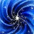
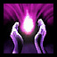
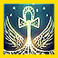

This update brings adrenaline to the skill bars, smoother character animations and Quicksand on Nomad’s Isle. It also improves health and energy estimates and fixes a few replay display issues.
Adrenaline now appears on the followed player’s skill bar and in the player info panel. Like in game, flames fill an adrenaline skill’s icon as it charges and disappear when it is used. Hover a skill to see its adrenaline.
Flames fill the icon as the skill charges. View full size
Recordings do not include adrenaline, so we estimate it from hits dealt and received, skill uses, deaths, time out of combat, and skills that give or remove adrenaline. In tests on 92 recent matches, the estimate showed enough adrenaline for more than 99% of adrenaline skill uses.
Character animations
Characters now move smoothly from one animation to the next. Repeating animations also no longer jump when they restart. This is on by default; you can turn it off with “Smooth animation blending” beside Model Scale.
Characters now flinch when hit, with a stronger reaction on critical hits. The reaction plays over their current animation, like in game.
Quicksand to the replay. Its icon appears on the effect bars in the party windows and for the selected player while they stand in it.
Quicksand now costs players 1 Energy per skill or attack, or 2 for an attack skill, like in game. Energy losses also appear as -1 numbers above the character.
The two new stats in the Match Library. The table shows them under the short names “En quicksand” and “In quicksand”. View full size
Health and energy estimates
Health numbers now match in the party window, the player info panel and the health bar above the skill bar. Rounding could previously make them differ by 1 (e.g. 4/550 in one window and 5/550 in another). Living players no longer show 0 Health.
The same Health number in all three places. View full size
Rangers: improved Ranger energy estimates when Expertise is unknown. The replay now estimates the rank from the skills the Ranger was able to use.

All In (November flux): its +3 Health regeneration now helps confirm whether it is active, so the icon is rarely shown semi-transparent. A Mesmer using skills stolen with

Arcane Thievery no longer incorrectly loses the icon.
Fixes

Healer’s Covenant now appears on the effect bar and is included in the energy estimate even if it was cast before the recording started. Recordings can start a few seconds late, and it was previously missed until the player cast it again.
Healer’s Covenant on the effect bar from the first seconds of the recording. View full size
Fixed damage, healing and energy numbers flickering above other characters when following a player with the camera zoomed in. The numbers now keep their original position and size instead of jumping between two spots.